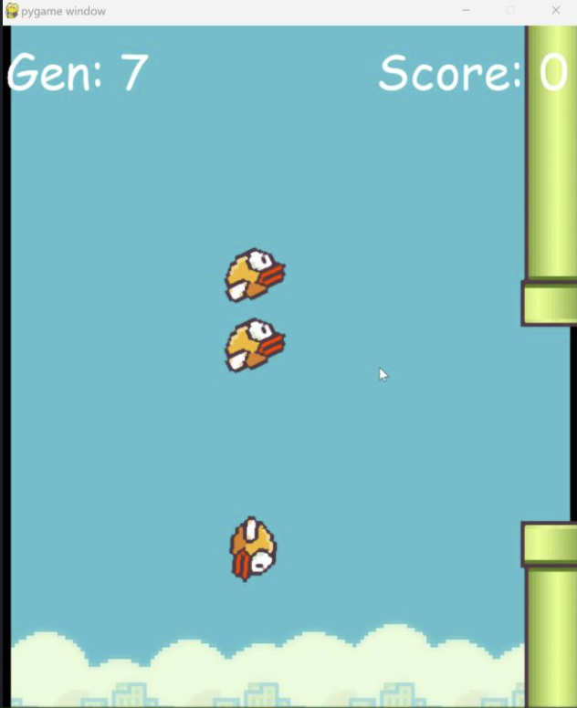

Technical Experiences
- Develop and maintain system architecture models in Cameo Systems Modeler using SysML and Model-Based Systems Engineering (MBSE) methodologies to support defense and government system engineering activities.
- Automate repetitive test-scripting tasks from system procedures to reduce manual effort and improve team efficiency.
- Evaluated and compared machine learning models for predicting battery State of Health (SOH) and Remaining Useful Life (RUL), with a focus on improving lithium-ion forecasting accuracy.
- Collaborated on a four-intern cross-functional team to develop and present a Shark Tank-style grid-sustainability proposal to company leadership.
- Diagnose and resolve hardware, software, device-setup, and network issues for students, faculty, and staff in a customer-facing campus IT environment.
- Support personal-device setup, troubleshooting, and effective use of campus technology resources.
Technical Projects
- Built a Flappy Bird game in Python and implemented NEAT-based automated gameplay.
- Used successive NEAT generations to evolve gameplay performance and improve agent scores over repeated runs.
- Debugged and optimized code to improve performance and reduce errors.

This is a picture of the AI on the 7th generation. The previous run had gotten a score of 4.
- Developed a 30-day text-based space simulation in C, integrating program components to meet defined functional requirements.
- Collaborated with a teammate to plan development tasks, divide responsibilities, review code, and resolve integration issues.
Current Classes
| Class Code | Class Name |
|---|---|
| EGR401 | Senior Project |
| CS341 | Software Engineering |
| CS330 | Digital Design and Embedded Systems |
| CS310 | Web Developement |